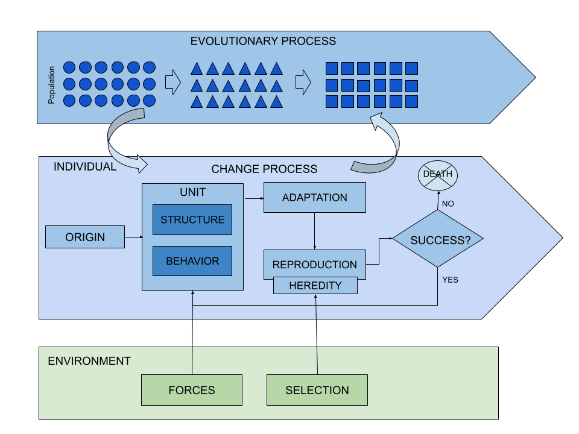

3 Description
It is important to clearly establish the differences that distinguish an evolutionary process from another of change or transformation. Although these are related concepts in evolutionary theory, they actually denote different processes that act on different agents, which is why they tend to be confusing even among some specialists.
Evolution is an overarching process that drives change in populations over generations. This means that evolutionary processes do not operate at the level of a specific individual or organism, which would only change or transform. Evolution therefore represents the cumulative effect of the inherited changes made by the characteristics of the individuals of a population, on which a selection process operates affecting the frequency of traits within a population over time. Change encompasses a broad spectrum of morphological or behavioral alterations within individuals from a variety of factors, including environmental pressures and reproductive patterns. Transformation suggests more profound or significant shifts in form, structure or function of individuals.

3.1 Origin
The problem of the origin is associated with that of the “Problem of Generation” and its accompanying theories of generation. An analysis of the origin involves the need to explore for evidence of the past in search for a better system. The following are some of the theories to consider when addressing the problem of generation of the original structure:
Spontaneous generation
Preformationism (forms that are predetermined)
Pre-existence
A mold that is fixed.
When the evolutionary analyst deals with the problem of generation she must attend to the developmental process, and the constraints that it can impose on the rest of the evolutionary process. These constraints might introduce non-random variations, which can mean a way to direct. the course of evolution.
It is especially useful for the evolutionary analyst to consider that the unit (species) has a limited number of developmental pathways available and that the selection process would therefore be limited only to the possibility of tinkering with the details.
3.2 Structure
The main issue when considering Structure is to establish what the analytical unit of the system is (and what its main basic components are). In the case of natural evolutionary theory, this unit has traditionally been the organism, but also the population and later, after modern synthesis, the gene. It is the analyst’s job to determine as clearly as possible which is the “unit” on which the evolutionary analysis of the system will focus.
3.3 Environment
The environment surrounding the chosen unit of analysis exerts various types of forces that act on the structure to provoke a process of change, with greater or lesser intensity, and in one direction or another.
The forces of change originating in the environment force the unit to change, so it is essential that the analyst analyze the environment in depth as a key impact driver, understanding the role of the environment in the evolutionary process of the system.
The connection between the environment and the origin is a key issue as well, since the direction of the change, if it exists, and the intensity or depth of the change that may take place in the structure of the unit may sometimes depend on it.
It is important when analyzing the environment to specify the type of force applied to the structure, and its sources in said environment.
3.4 Behavior
Behavior is the way in which the structure articulates a response to the pressure exerted by environmental forces. Behavior establishes the boundaries within which the structure is capable of absorbing the forces of the environment and giving an adaptive response to the new situation or challenge posed by the environment.
The result of the behavior, which takes place within the boundaries established by the structure of the unit, can give rise to three types of adaptive responses by the system:
- New system qualities (traits)
- Loss of system qualities (traits)
- Modification of system qualities (traits)
3.5 Change
Both the structure and the behavior are permanently immersed in a process of change, since the unit is always sensitive to the forces exerted on it originating in the environment. The overall evolutionary process of the unit will depend on the way in which these forces affect the unit.
The characterization of the change process must be carried out considering the following key dimensions, all of them closely related:
The direction or trend of the change process. This question has historically been part of the discussion on evolutionary theory, with different approaches given by different authors.
The change driver, whether it is a single one or a set of drivers that configure the change process.
The mechanics of the process, whether gradual and slow, or sudden and in jumps, or any intermediate alternative in the continuum formed by these two extremes.
The time scale on which the change process takes place. This can develop over a vast amount of time or a small amount of time, or somewhere in between.
Some important considerations to keep in mind are that the process of change always implies progress, but it can also involve regression.
3.6 Reproduction
Currently there is a generalized consensus in accepting the reproductive success of the unit as the main driver of selection, that is, the ability to transmit the genetic load of the unit to the offspring. This modern vision of evolution has not always been like this, so less than 100 years ago success was considered to be found in the ability to adapt to the environment.
Selection based on reproductive success has opened the doors to new avenues of interest and study, which now focus more on sexual selection, in the case of natural systems, or on the reproduction mechanisms of any other system.
Let us also think that the selection process that takes place in the environment is continuous and is not interrupted even when the environment is stable. In other words, competition between some units and others for scarce resources never stops, even if the environment appears stable. The analogy of the Red Queen hypothesis, introduced by Van Halen Van Valen (2014) to denote that in the evolutionary race between organisms species must constantly adapt and evolve just to maintain their relative fitness within an ever-changing environment, it is good to explain that units must remain constantly improving or, otherwise, they will be outstripped by their rivals.
The notion of selection used in this paper is that of having a balance between different characters within a population and not about the development of a murderous or aggressive instinct.